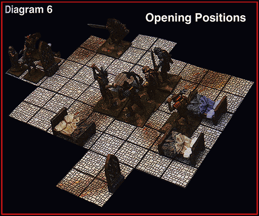

Example of Combat Here’s the scenario: four adventurers are exploring the dungeons beneath a
ruined temple when they encounter a guardroom with six bugbears armed with
morningstars. The heroes are Dain, a dwarf fighter with 13 fatigue points; Pascal, a
human paladin with 10 fatigue points; Lyssa, an elven mage with 4 fatigue
points; and Damiar, a half-elven thief with 6 fatigue points. The bugbears each have
11 fatigue points (Monsters get 8 points plus their Hit Dice, in this case
3+1). None of the members of either group are considered encumbered.
No one is surprised, so the DM places the bugbears in their room and tells the
players to arrange their heroes in the doorway. Since Damiar opened the door,
the DM decides that Damiar must be in front, even though Dain usually takes
point in the marching order.

Table of Contents